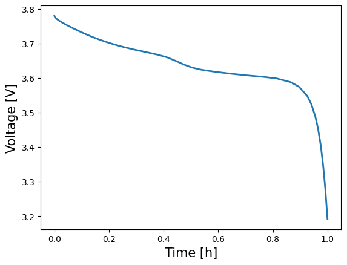
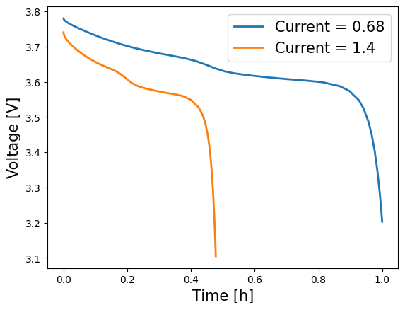

Tip
An interactive online version of this notebook is available, which can be
accessed via

Alternatively, you may download this notebook and run it offline.
Changing settings when solving PyBaMM models#
This example notebook showed how to run an SPM battery model, using the default parameters, discretisation and solvers that were defined for that particular model. Naturally we would like the ability to alter these options on a case by case basis, and this notebook gives an example of how to do this, again using the SPM model. In this notebook we explicitly handle all the stages of setting up, processing and solving the model in order to explain them in detail. However,
it is often simpler in practice to use the Simulation class, which handles many of the stages automatically, as shown here.
Table of Contents#
Default SPM model
Changing the parameters
Changing the discretisation
Changing the solver
The default SPM model#
Below is the code to define and run the default SPM model included in PyBaMM (if this is unfamiliar to you, please see this notebook for more details)
[1]:
%pip install "pybamm[plot,cite]" -q # install PyBaMM if it is not installed
import os
import matplotlib.pyplot as plt
import pybamm
os.chdir(pybamm.__path__[0] + "/..")
# create the model
model = pybamm.lithium_ion.SPM()
# set the default model geometry
geometry = model.default_geometry
# set the default model parameters
param = model.default_parameter_values
# set the parameters for the model and the geometry
param.process_model(model)
param.process_geometry(geometry)
# mesh the domains
mesh = pybamm.Mesh(geometry, model.default_submesh_types, model.default_var_pts)
# discretise the model equations
disc = pybamm.Discretisation(mesh, model.default_spatial_methods)
disc.process_model(model)
# Solve the model at the given time points
solver = model.default_solver
t_eval = [0, 3600]
solution = solver.solve(model, t_eval)
Note: you may need to restart the kernel to use updated packages.
To verify the solution, we can look at a plot of the Voltage over time
[2]:
time = solution["Time [h]"].entries
voltage = solution["Voltage [V]"].entries
plt.plot(time, voltage, lw=2, label=model.name)
plt.xlabel("Time [h]", fontsize=15)
plt.ylabel("Voltage [V]", fontsize=15)
plt.show()

Changing the model parameters#
The parameters are defined using the `pybamm.ParameterValues <https://docs.pybamm.org/en/latest/source/api/parameters/parameter_values.html>`__ class, which takes either a python dictionary or CSV file with the mapping between parameter names and values.
First lets have a look at the default parameters that are included with the SPM model:
[3]:
model.default_parameter_values.items
[3]:
<bound method ParameterValues.items of {'Ambient temperature [K]': 298.15,
'Bulk solvent concentration [mol.m-3]': 2636.0,
'Cation transference number': 0.4,
'Cell cooling surface area [m2]': 0.0569,
'Cell volume [m3]': 7.8e-06,
'Contact resistance [Ohm]': 0,
'Current function [A]': 0.680616,
'EC diffusivity [m2.s-1]': 2e-18,
'EC initial concentration in electrolyte [mol.m-3]': 4541.0,
'Edge heat transfer coefficient [W.m-2.K-1]': 0.3,
'Electrode height [m]': 0.137,
'Electrode width [m]': 0.207,
'Electrolyte conductivity [S.m-1]': <function electrolyte_conductivity_Capiglia1999 at 0x1598bcf40>,
'Electrolyte diffusivity [m2.s-1]': <function electrolyte_diffusivity_Capiglia1999 at 0x1598bd080>,
'Initial SEI thickness [m]': 5e-09,
'Initial concentration in electrolyte [mol.m-3]': 1000.0,
'Initial concentration in negative electrode [mol.m-3]': 19986.609595075,
'Initial concentration in positive electrode [mol.m-3]': 30730.7554385565,
'Initial temperature [K]': 298.15,
'Lithium interstitial reference concentration [mol.m-3]': 15.0,
'Lower voltage cut-off [V]': 3.105,
'Maximum concentration in negative electrode [mol.m-3]': 24983.2619938437,
'Maximum concentration in positive electrode [mol.m-3]': 51217.9257309275,
'Negative current collector conductivity [S.m-1]': 59600000.0,
'Negative current collector density [kg.m-3]': 8954.0,
'Negative current collector specific heat capacity [J.kg-1.K-1]': 385.0,
'Negative current collector surface heat transfer coefficient [W.m-2.K-1]': 0.0,
'Negative current collector thermal conductivity [W.m-1.K-1]': 401.0,
'Negative current collector thickness [m]': 2.5e-05,
'Negative electrode Bruggeman coefficient (electrode)': 1.5,
'Negative electrode Bruggeman coefficient (electrolyte)': 1.5,
'Negative electrode OCP [V]': <function graphite_mcmb2528_ocp_Dualfoil1998 at 0x159a1dda0>,
'Negative electrode OCP entropic change [V.K-1]': <function graphite_entropic_change_Moura2016 at 0x159a1e160>,
'Negative electrode active material volume fraction': 0.6,
'Negative electrode charge transfer coefficient': 0.5,
'Negative electrode conductivity [S.m-1]': 100.0,
'Negative electrode density [kg.m-3]': 1657.0,
'Negative electrode double-layer capacity [F.m-2]': 0.2,
'Negative electrode exchange-current density [A.m-2]': <function graphite_electrolyte_exchange_current_density_Dualfoil1998 at 0x159a1e020>,
'Negative electrode porosity': 0.3,
'Negative electrode reaction-driven LAM factor [m3.mol-1]': 0.0,
'Negative electrode specific heat capacity [J.kg-1.K-1]': 700.0,
'Negative electrode thermal conductivity [W.m-1.K-1]': 1.7,
'Negative electrode thickness [m]': 0.0001,
'Negative particle diffusivity [m2.s-1]': <function graphite_mcmb2528_diffusivity_Dualfoil1998 at 0x159a1dbc0>,
'Negative particle radius [m]': 1e-05,
'Negative tab centre y-coordinate [m]': 0.06,
'Negative tab centre z-coordinate [m]': 0.137,
'Negative tab heat transfer coefficient [W.m-2.K-1]': 10.0,
'Negative tab width [m]': 0.04,
'Nominal cell capacity [A.h]': 0.680616,
'Number of cells connected in series to make a battery': 1.0,
'Number of electrodes connected in parallel to make a cell': 1.0,
'Open-circuit voltage at 0% SOC [V]': 3.105,
'Open-circuit voltage at 100% SOC [V]': 4.1,
'Positive current collector conductivity [S.m-1]': 35500000.0,
'Positive current collector density [kg.m-3]': 2707.0,
'Positive current collector specific heat capacity [J.kg-1.K-1]': 897.0,
'Positive current collector surface heat transfer coefficient [W.m-2.K-1]': 0.0,
'Positive current collector thermal conductivity [W.m-1.K-1]': 237.0,
'Positive current collector thickness [m]': 2.5e-05,
'Positive electrode Bruggeman coefficient (electrode)': 1.5,
'Positive electrode Bruggeman coefficient (electrolyte)': 1.5,
'Positive electrode OCP [V]': <function lico2_ocp_Dualfoil1998 at 0x159577100>,
'Positive electrode OCP entropic change [V.K-1]': <function lico2_entropic_change_Moura2016 at 0x1598bd8a0>,
'Positive electrode active material volume fraction': 0.5,
'Positive electrode charge transfer coefficient': 0.5,
'Positive electrode conductivity [S.m-1]': 10.0,
'Positive electrode density [kg.m-3]': 3262.0,
'Positive electrode double-layer capacity [F.m-2]': 0.2,
'Positive electrode exchange-current density [A.m-2]': <function lico2_electrolyte_exchange_current_density_Dualfoil1998 at 0x1598bd940>,
'Positive electrode porosity': 0.3,
'Positive electrode reaction-driven LAM factor [m3.mol-1]': 0.0,
'Positive electrode specific heat capacity [J.kg-1.K-1]': 700.0,
'Positive electrode thermal conductivity [W.m-1.K-1]': 2.1,
'Positive electrode thickness [m]': 0.0001,
'Positive particle diffusivity [m2.s-1]': <function lico2_diffusivity_Dualfoil1998 at 0x159a1e200>,
'Positive particle radius [m]': 1e-05,
'Positive tab centre y-coordinate [m]': 0.147,
'Positive tab centre z-coordinate [m]': 0.137,
'Positive tab heat transfer coefficient [W.m-2.K-1]': 10.0,
'Positive tab width [m]': 0.04,
'Ratio of lithium moles to SEI moles': 2.0,
'Reference temperature [K]': 298.15,
'SEI electron conductivity [S.m-1]': 8.95e-14,
'SEI growth activation energy [J.mol-1]': 0.0,
'SEI growth transfer coefficient': 0.5,
'SEI kinetic rate constant [m.s-1]': 1e-12,
'SEI lithium interstitial diffusivity [m2.s-1]': 1e-20,
'SEI open-circuit potential [V]': 0.4,
'SEI partial molar volume [m3.mol-1]': 9.585e-05,
'SEI reaction exchange current density [A.m-2]': 1.5e-07,
'SEI resistivity [Ohm.m]': 200000.0,
'SEI solvent diffusivity [m2.s-1]': 2.5e-22,
'Separator Bruggeman coefficient (electrolyte)': 1.5,
'Separator density [kg.m-3]': 397.0,
'Separator porosity': 1.0,
'Separator specific heat capacity [J.kg-1.K-1]': 700.0,
'Separator thermal conductivity [W.m-1.K-1]': 0.16,
'Separator thickness [m]': 2.5e-05,
'Thermodynamic factor': 1.0,
'Total heat transfer coefficient [W.m-2.K-1]': 10.0,
'Upper voltage cut-off [V]': 4.1,
'citations': ['Marquis2019']}>
[4]:
format_str = "{:<75} {:>20}"
print(format_str.format("PARAMETER", "VALUE"))
print("-" * 97)
for key, value in model.default_parameter_values.items():
try:
print(format_str.format(key, value))
except TypeError:
print(format_str.format(key, value.__str__()))
PARAMETER VALUE
-------------------------------------------------------------------------------------------------
Ratio of lithium moles to SEI moles 2.0
SEI partial molar volume [m3.mol-1] 9.585e-05
SEI growth transfer coefficient 0.5
SEI reaction exchange current density [A.m-2] 1.5e-07
SEI resistivity [Ohm.m] 200000.0
SEI solvent diffusivity [m2.s-1] 2.5e-22
Bulk solvent concentration [mol.m-3] 2636.0
SEI open-circuit potential [V] 0.4
SEI electron conductivity [S.m-1] 8.95e-14
SEI lithium interstitial diffusivity [m2.s-1] 1e-20
Lithium interstitial reference concentration [mol.m-3] 15.0
Initial SEI thickness [m] 5e-09
EC initial concentration in electrolyte [mol.m-3] 4541.0
EC diffusivity [m2.s-1] 2e-18
SEI kinetic rate constant [m.s-1] 1e-12
SEI growth activation energy [J.mol-1] 0.0
Negative electrode reaction-driven LAM factor [m3.mol-1] 0.0
Positive electrode reaction-driven LAM factor [m3.mol-1] 0.0
Negative current collector thickness [m] 2.5e-05
Negative electrode thickness [m] 0.0001
Separator thickness [m] 2.5e-05
Positive electrode thickness [m] 0.0001
Positive current collector thickness [m] 2.5e-05
Electrode height [m] 0.137
Electrode width [m] 0.207
Negative tab width [m] 0.04
Negative tab centre y-coordinate [m] 0.06
Negative tab centre z-coordinate [m] 0.137
Positive tab width [m] 0.04
Positive tab centre y-coordinate [m] 0.147
Positive tab centre z-coordinate [m] 0.137
Cell cooling surface area [m2] 0.0569
Cell volume [m3] 7.8e-06
Negative current collector conductivity [S.m-1] 59600000.0
Positive current collector conductivity [S.m-1] 35500000.0
Negative current collector density [kg.m-3] 8954.0
Positive current collector density [kg.m-3] 2707.0
Negative current collector specific heat capacity [J.kg-1.K-1] 385.0
Positive current collector specific heat capacity [J.kg-1.K-1] 897.0
Negative current collector thermal conductivity [W.m-1.K-1] 401.0
Positive current collector thermal conductivity [W.m-1.K-1] 237.0
Nominal cell capacity [A.h] 0.680616
Current function [A] 0.680616
Contact resistance [Ohm] 0
Negative electrode conductivity [S.m-1] 100.0
Maximum concentration in negative electrode [mol.m-3] 24983.2619938437
Negative particle diffusivity [m2.s-1] <function graphite_mcmb2528_diffusivity_Dualfoil1998 at 0x159a1dbc0>
Negative electrode OCP [V] <function graphite_mcmb2528_ocp_Dualfoil1998 at 0x159a1dda0>
Negative electrode porosity 0.3
Negative electrode active material volume fraction 0.6
Negative particle radius [m] 1e-05
Negative electrode Bruggeman coefficient (electrolyte) 1.5
Negative electrode Bruggeman coefficient (electrode) 1.5
Negative electrode charge transfer coefficient 0.5
Negative electrode double-layer capacity [F.m-2] 0.2
Negative electrode exchange-current density [A.m-2] <function graphite_electrolyte_exchange_current_density_Dualfoil1998 at 0x159a1e020>
Negative electrode density [kg.m-3] 1657.0
Negative electrode specific heat capacity [J.kg-1.K-1] 700.0
Negative electrode thermal conductivity [W.m-1.K-1] 1.7
Negative electrode OCP entropic change [V.K-1] <function graphite_entropic_change_Moura2016 at 0x159a1e160>
Positive electrode conductivity [S.m-1] 10.0
Maximum concentration in positive electrode [mol.m-3] 51217.9257309275
Positive particle diffusivity [m2.s-1] <function lico2_diffusivity_Dualfoil1998 at 0x159a1e200>
Positive electrode OCP [V] <function lico2_ocp_Dualfoil1998 at 0x159577100>
Positive electrode porosity 0.3
Positive electrode active material volume fraction 0.5
Positive particle radius [m] 1e-05
Positive electrode Bruggeman coefficient (electrolyte) 1.5
Positive electrode Bruggeman coefficient (electrode) 1.5
Positive electrode charge transfer coefficient 0.5
Positive electrode double-layer capacity [F.m-2] 0.2
Positive electrode exchange-current density [A.m-2] <function lico2_electrolyte_exchange_current_density_Dualfoil1998 at 0x1598bd940>
Positive electrode density [kg.m-3] 3262.0
Positive electrode specific heat capacity [J.kg-1.K-1] 700.0
Positive electrode thermal conductivity [W.m-1.K-1] 2.1
Positive electrode OCP entropic change [V.K-1] <function lico2_entropic_change_Moura2016 at 0x1598bd8a0>
Separator porosity 1.0
Separator Bruggeman coefficient (electrolyte) 1.5
Separator density [kg.m-3] 397.0
Separator specific heat capacity [J.kg-1.K-1] 700.0
Separator thermal conductivity [W.m-1.K-1] 0.16
Initial concentration in electrolyte [mol.m-3] 1000.0
Cation transference number 0.4
Thermodynamic factor 1.0
Electrolyte diffusivity [m2.s-1] <function electrolyte_diffusivity_Capiglia1999 at 0x1598bd080>
Electrolyte conductivity [S.m-1] <function electrolyte_conductivity_Capiglia1999 at 0x1598bcf40>
Reference temperature [K] 298.15
Ambient temperature [K] 298.15
Negative current collector surface heat transfer coefficient [W.m-2.K-1] 0.0
Positive current collector surface heat transfer coefficient [W.m-2.K-1] 0.0
Negative tab heat transfer coefficient [W.m-2.K-1] 10.0
Positive tab heat transfer coefficient [W.m-2.K-1] 10.0
Edge heat transfer coefficient [W.m-2.K-1] 0.3
Total heat transfer coefficient [W.m-2.K-1] 10.0
Number of electrodes connected in parallel to make a cell 1.0
Number of cells connected in series to make a battery 1.0
Lower voltage cut-off [V] 3.105
Upper voltage cut-off [V] 4.1
Open-circuit voltage at 0% SOC [V] 3.105
Open-circuit voltage at 100% SOC [V] 4.1
Initial concentration in negative electrode [mol.m-3] 19986.609595075
Initial concentration in positive electrode [mol.m-3] 30730.7554385565
Initial temperature [K] 298.15
citations ['Marquis2019']
Most of the parameters in this list have numerical values. Some have string values, that point to particular python functions within PyBaMM. These denote parameters that vary over time and/or space, in a manner defined by the given python function. For the moment we will ignore these, and focus on altering one of the numerical parameters.
The class `pybamm.ParameterValues <https://docs.pybamm.org/en/latest/source/api/parameters/parameter_values.html>`__ acts like the normal python dict data structure, so you can read or write individual parameters accordingly:
[5]:
variable = "Current function [A]"
old_value = param[variable]
param[variable] = 1.4
new_value = param[variable]
print(variable, "was", old_value)
print(variable, "now is", param[variable])
Current function [A] was 0.680616
Current function [A] now is 1.4
In order to compare solutions with different parameter values, parameters must be changed to InputParameter objects, whose value can then be specified when solving. For example, we can compare the Voltage calculated using both the old and new current values.
[6]:
# Set up
model = pybamm.lithium_ion.SPM()
solver = model.default_solver
param["Current function [A]"] = "[input]"
param.process_model(model)
disc.process_model(model)
# Solution with current = 0.68
old_solution = solver.solve(model, t_eval, inputs={"Current function [A]": 0.68})
old_time = old_solution["Time [h]"].entries
old_voltage = old_solution["Voltage [V]"].entries
# Solution with current = 1.4
new_solution = solver.solve(model, t_eval, inputs={"Current function [A]": 1.4})
new_time = new_solution["Time [h]"].entries
new_voltage = new_solution["Voltage [V]"].entries
plt.plot(old_time, old_voltage, lw=2, label="Current = 0.68")
plt.plot(new_time, new_voltage, lw=2, label="Current = 1.4")
plt.xlabel("Time [h]", fontsize=15)
plt.ylabel("Voltage [V]", fontsize=15)
plt.legend(fontsize=15)
plt.show()

Note that there is a small number of parameters for which this is not possible, since the discretisation depends on them (for example, Negative electrode thickness). In this case you would need to remesh the geometry as the relative length of the electrodes would have altered. This would in turn require you to re-discretise the model equations.
Changing the discretisation#
The chosen spatial discretisation method to use for each domain is passed into the `pybamm.Discretisation <https://docs.pybamm.org/en/latest/source/api/spatial_methods/discretisation.html>`__ class as one of its arguments. The default spatial methods for the SPM class are given as:
[7]:
print(format_str.format("DOMAIN", "DISCRETISED BY"))
print("-" * 82)
for key, value in model.default_spatial_methods.items():
print(format_str.format(key, value.__class__.__name__))
DOMAIN DISCRETISED BY
----------------------------------------------------------------------------------
macroscale FiniteVolume
negative particle FiniteVolume
positive particle FiniteVolume
negative primary particle FiniteVolume
positive primary particle FiniteVolume
negative secondary particle FiniteVolume
positive secondary particle FiniteVolume
negative particle size FiniteVolume
positive particle size FiniteVolume
negative primary particle size FiniteVolume
positive primary particle size FiniteVolume
negative secondary particle size FiniteVolume
positive secondary particle size FiniteVolume
current collector ZeroDimensionalSpatialMethod
To change the discretisation for a particular domain, you can update the spatial methods dict with the new discretiation class that you wish to use, for example:
[8]:
spatial_methods = model.default_spatial_methods
spatial_methods["negative particle"] = pybamm.SpectralVolume()
You can also update the submeshes (meshes used for each domain) in a similar way. We’ll generate a spectral mesh to use with our spectral volume method in the negative particle
[9]:
submesh_types = model.default_submesh_types
submesh_types["negative particle"] = pybamm.MeshGenerator(
pybamm.SpectralVolume1DSubMesh
)
Now that we have set the new discretisation method, we can proceed to re-discretise and then solve the model. Note that in this case we need to regenerate the model using pybamm.lithium_ion.SPM, as the original model information was lost when we discretised it above.
[10]:
# re-generate the model and set parameters (with fixed current function this time)
model = pybamm.lithium_ion.SPM()
solver = model.default_solver
param["Current function [A]"] = 0.68
param.process_model(model)
# re-discretise the model with the new mesh...
mesh = pybamm.Mesh(geometry, submesh_types, model.default_var_pts)
disc = pybamm.Discretisation(mesh, spatial_methods)
disc.process_model(model)
# ... and finally solve it
solution = solver.solve(model, t_eval)
pybamm.QuickPlot(solution).plot(0)

Changing the solver#
Which method you use to integrate the discretised model in time can also be changed. PyBaMM has a number of different solvers available, all of which are described in the documentation.
[11]:
print("Default solver for SPM model:", type(model.default_solver).__name__)
Default solver for SPM model: IDAKLUSolver
To change this, simply create a new solver using one of the available classes and use it to solve your discretised model. The default IDAKLUSolver is recommended for essentially all use cases.
[12]:
new_solver = pybamm.IDAKLUSolver()
new_solution = new_solver.solve(model, t_eval)
pybamm.QuickPlot(new_solution).plot(0)

References#
The relevant papers for this notebook are:
[13]:
pybamm.print_citations()
[1] Joel A. E. Andersson, Joris Gillis, Greg Horn, James B. Rawlings, and Moritz Diehl. CasADi – A software framework for nonlinear optimization and optimal control. Mathematical Programming Computation, 11(1):1–36, 2019. doi:10.1007/s12532-018-0139-4.
[2] Von DAG Bruggeman. Berechnung verschiedener physikalischer konstanten von heterogenen substanzen. i. dielektrizitätskonstanten und leitfähigkeiten der mischkörper aus isotropen substanzen. Annalen der physik, 416(7):636–664, 1935.
[3] Charles R. Harris, K. Jarrod Millman, Stéfan J. van der Walt, Ralf Gommers, Pauli Virtanen, David Cournapeau, Eric Wieser, Julian Taylor, Sebastian Berg, Nathaniel J. Smith, and others. Array programming with NumPy. Nature, 585(7825):357–362, 2020. doi:10.1038/s41586-020-2649-2.
[4] Alan C. Hindmarsh. The PVODE and IDA algorithms. Technical Report, Lawrence Livermore National Lab., CA (US), 2000. doi:10.2172/802599.
[5] Alan C. Hindmarsh, Peter N. Brown, Keith E. Grant, Steven L. Lee, Radu Serban, Dan E. Shumaker, and Carol S. Woodward. SUNDIALS: Suite of nonlinear and differential/algebraic equation solvers. ACM Transactions on Mathematical Software (TOMS), 31(3):363–396, 2005. doi:10.1145/1089014.1089020.
[6] Scott G. Marquis, Valentin Sulzer, Robert Timms, Colin P. Please, and S. Jon Chapman. An asymptotic derivation of a single particle model with electrolyte. Journal of The Electrochemical Society, 166(15):A3693–A3706, 2019. doi:10.1149/2.0341915jes.
[7] Valentin Sulzer, Scott G. Marquis, Robert Timms, Martin Robinson, and S. Jon Chapman. Python Battery Mathematical Modelling (PyBaMM). Journal of Open Research Software, 9(1):14, 2021. doi:10.5334/jors.309.
[8] Z. J. Wang. Spectral (finite) volume method for conservation laws on unstructured grids. Journal of Computational Physics, 178(1):210–251, 2002. doi:10.1006/jcph.2002.7041.